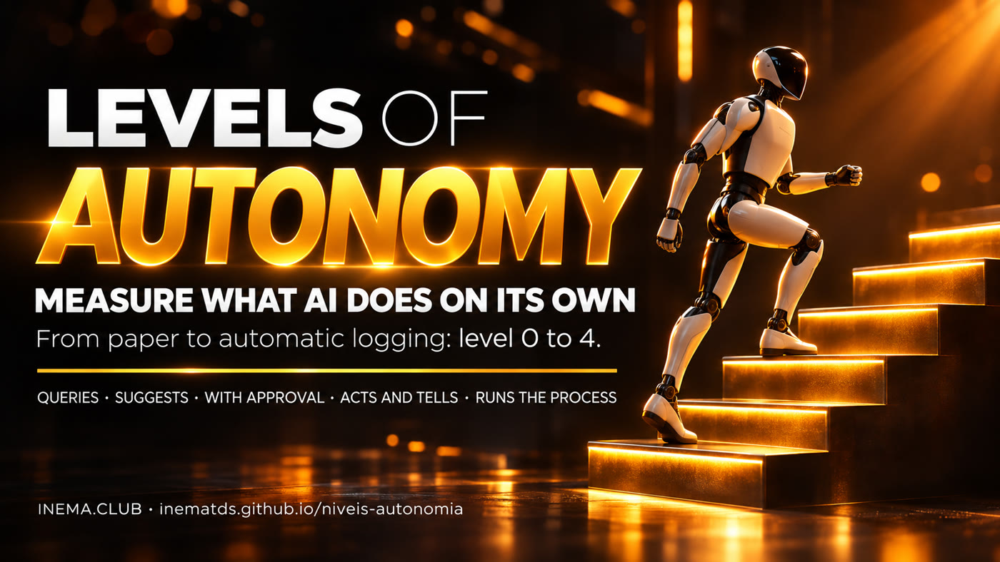

From level 0 (just asking) to level 4 (runs the entire process). Measure it on paper or let a program track it for you.

This kit shows you how to measure how much freedom you give AI for each task, on a scale from 0 to 4: from simply answering to handling an entire process on its own. It is for people who use AI at work and want to know what they still do by hand and what they can hand off. It addresses the problem of granting autonomy in the dark, without knowing where AI gets things right and where it goes too far. You can start today with a paper form; if you use Claude Code, you can turn on automatic tracking that reads your own sessions and records every connection used.
A level applies to a task, not to the entire AI. The same AI can be at level 3 for organizing files and level 1 for writing to your client.
AI: answers without touching anything.
You: decide and do everything.
AI: researches, reads, and prepares a draft or plan. It changes nothing.
You: apply the suggestion.
AI: edits files and runs commands, one step at a time.
You: approve each step.
AI: works on its own within limits and tells you when it is done.
You: review the result afterward.
AI: runs the entire process, including actions outside your machine (publishing, sending, uploading). It only calls you when an exception occurs.
You: set the rule, review the report, and handle exceptions.
The mistake no one notices until things go wrong: handing everything over at level 4 right away. AI makes mistakes slowly and silently, and you only find out after the damage is done. That is why you move up one level at a time, one task at a time.
The endpoints (0 and 4) come from the video “5 Níveis de Autonomia da IA que Quase Ninguém Usa” (in Portuguese). Levels 1 to 3 were written for this kit to make them measurable.
Without records, autonomy is a guess. With records, you can see what you still do by hand, what AI already does on its own, and which doors you have opened for it.
A printable form. For each task AI completes, record the date, task, level from 0 to 4, which connection it used (folder, email, calendar, website...), and whether you needed to correct it. Start today, without installing anything, with any AI.
A program reads your Claude Code session records, classifies each one from 0 to 4, and records every connection used. It runs on its own every day and builds a history.
The paper and program use the same columns. You can start on paper and switch to automatic tracking whenever you want, without losing what you have already recorded.
| Question | Where it appears |
|---|---|
| What do I still do by hand that AI could do? | Tasks repeated 3 or more times at levels 0 to 2 |
| What does AI already do on its own that I had forgotten about? | Routines with no one in the conversation, at levels 3 and 4 |
| Which doors have I opened for it? | List of connections, with the first and last time each was used |
| Where did it make a mistake after I let it work on its own? | The “needed correction” column on the form |
Automatic measurement of this kit’s author’s Claude Code records, from 29/10 to 12/11/2026. Aggregate numbers only (file exemplo/relatorio-agregado-2026-11-12.json); no content was published.
sessions recorded over 14 days.
with the person in the conversation (terminal or Telegram). Of these, 71% were at level 3 and 25% at level 2.
ran with no one in the conversation (routines, timers, pipelines). 12% reached level 4 and accounted for 40% of actions that change something.
What this taught us: mixing the two types is misleading. In the first count, half of the sessions looked like “just queries” (level 0). They were short steps in automatic pipelines, with no tool. Separating “with you” from “without you” changed the whole picture.
An honest limitation: the level shows how much freedom AI had, not whether it got things right. And the program only sees Claude Code; API calls made inside a script appear only as “script,” without the service name.
Five steps, with nothing to install until the fourth.
Open kit/ficha-papel.html and print it on A4 paper in landscape orientation. Put it near your computer.
One line for each task AI completes. Use a verb plus an object (“summarize a contract,” “reply to an email”). Mark the level and connection.
Count the lines at each level. A task repeated 3 times at levels 0 to 2 is a candidate for moving up. If you corrected a task at level 3 or 4 more than 1 time in 10, move it down one level.
See the technical section below. It takes a few minutes to set up and then measures on its own.
Choose the task that is most frequent and safest. Move it up one level. Measure again the following week.
You do not need this section to understand what came before.
A Python program with no dependencies. It scans, classifies, reports, and lists connections. It only reads local files.
The printable form and the weekly review guide.
A daily timer that keeps the records up to date without you having to remember.
| Signal in the log | How it fits the rule |
|---|---|
| No tools used | Level 0 |
| Read only (read, search, list) | Level 1 |
| Changed something and the mode requires approval | Level 2 |
| Changed something without asking for approval, several actions per message from you | Level 3 |
| At most 1 message from you, 15 or more actions, and at least 1 effect outside the machine | Level 4 |
| Ran without a terminal and with no one in the conversation | Separated as “without you” (routines) |
The thresholds (15 actions, 3 actions per message) are kept in a single LIM dictionary in the code, so you can calibrate them.
Standard library only. Nothing to install.
python3 --versionThe program reads ~/.claude/projects. If there are no sessions there, there is nothing to measure. Any AI works for the paper form.
Clone the repository.
git clone https://github.com/inematds/niveis-autonomia cd niveis-autonomia
The first run reads the last 30 days; later runs only read what has changed.
python3 medir/autonomia.py varrer --desde 2026-10-15 # replace with the date you want
Distribution by level, separated into “with you” and “without you,” repeated tasks, and connections.
python3 medir/autonomia.py relatorioEverything AI touched: command-line tools, MCP servers, skills, agents, websites.
python3 medir/autonomia.py conexoes python3 medir/autonomia.py inventario # what is configured vs. what was used (names only)
Installs a timer for your user (without sudo) that scans every day at 06:10 and saves registro/ultimo-relatorio.md.
sh systemd/instalar.sh # to turn it off: systemctl --user disable --now niveis-autonomia.timer
14 tests cover the 5 levels, permission mode, Telegram, and routines.
python3 -I -m unittest discover -s testsPrivacy: everything runs on your machine, without calling an API. Records stay in registro/, outside git, with counts and a short task label. The inventory lists names only, never keys or addresses.
bash:python3, without the service name.